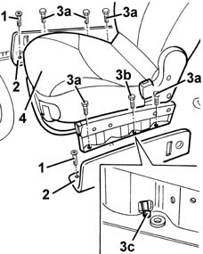

7045A02 central front seat - r r
- Path
- Procedures > 70 FITTINGS > 7045 FRONT SEATS > 7045A front seat assembly > 7045A02 central front seat - r r
- Kind
- repair procedure (removal / refitting; the operation number is the code)
- Applies to
- all engines; all production periods
- Interactive page
- https://sloeber94.github.io/elrnDB-fMltpl/en/#/2892217
Applies to: all engines; all production periods
 Removing
Removing
 Refitting
Refitting7045A10 l/h or r/h front seat (one) - r+r (right and left)
1. Undo the bolts securing the guide cover mouldings.
2. Remove the mouldings.
3. Undo the side bolts (3a and 3b) securing the seat. When the bolt (3b) is unscrewed, the lever (3c) is lifted, which places the seat belt pretensioner mechanism in a "safe" condition.
4. Remove the seat.

Applies to: all engines; all production periods
Refitting
RemovingCheck that the seat is not damaged.
Fit the seat.
Tighten the seat side bolts.
 | Fastening | Component | Ø | Value (daNm) |
|---|---|---|---|---|
- | Side bolt | CENTRAL FRONT SEAT | M10 x 1.25 | 3.4 |
Fit the mouldings and fix them with the bolts.
7045A10 l/h or r/h front seat (one) - r+r (right and left)
Topics linked from this page (1)
Topics that link to this page (11)
- 5010B46 central air duct to rear seat - arrange
- 5505C41 cabin wiring - r r
- 7040H10 roof panel lining - r r
- 7040H16 roof panel lining - r r
- 7040L13 passenger compartment floor soundproofing - r r
- 7040L17 passenger compartment floor front carpet - r r
- 7040L18 passenger compartment floor rear carpet - r r
- 7045A74 central front seat mount/guides - r r
- 7045A95 Centre front seat COVER - R.R.
- 7045A96 Centre front seat CUSHION UPHOLSTERY - Repairing
- 7065A40 seat belt for central front seat belt r r